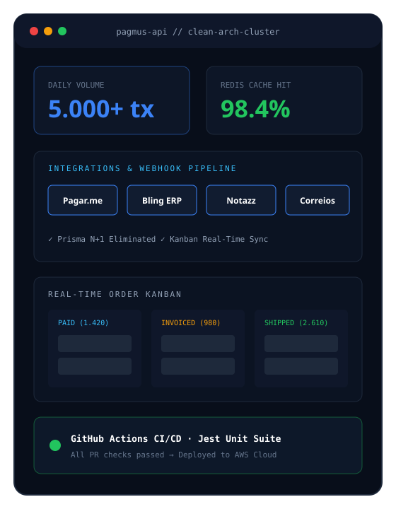

Estruturação de APIs em camadas com TypeScript e Express para suportar até 5.000 vendas diárias de infoprodutos e itens físicos, integrando gateways financeiros, faturamento, logística e cache em Redis.
Arquitetura resiliente em camadas lidando com alta concorrência de checkout, webhooks e divisão entre produtores e afiliados.
Pagar.me, Bling, Notazz e Correios unificados para conciliação financeira, emissão fiscal e rastreio em tempo real via Kanban.

A Pagmus é uma plataforma de pagamentos e marketing digital que intermedia vendas de infoprodutos e itens físicos entre produtores e afiliados. Com o crescimento acelerado de transações, a operação exigia uma base técnica capaz de sustentar picos de até 5.000 vendas diárias sem latência ou inconsistência financeira.
A alta concorrência de transações e múltiplas integrações externas geravam desafios críticos de performance, rastreabilidade e segurança de deploy:
Clean Architecture, Cache em Redis & CI/CD Automatizado
Estruturei as APIs em camadas desacopladas (Clean Architecture e POO) com TypeScript e Express, refatorei consultas relacionais no Prisma eliminando queries N+1, apliquei Redis para cache de relatórios pesados e mensagens, integrei Pagar.me, Bling, Notazz e Correios em um Kanban em tempo real e configurei pipelines no GitHub Actions com testes unitários em Jest a cada PR.
Engenharia de APIs de alta disponibilidade para 5.000+ vendas diárias com Clean Architecture & Redis
Atuação direta na arquitetura de APIs, integrações financeiras e logísticas, performance de banco de dados e automação de deploy.
Estruturação em Clean Architecture e POO com TypeScript/Express, isolando regras de negócio de infraestrutura.
Integração com Pagar.me para processamento de pagamentos, split entre produtores/afiliados e conciliação.
Integração dos serviços Bling e Notazz para emissão automatizada de notas fiscais e gestão de pedidos.
Integração com Correios exibindo o status e rastreio de encomendas em tempo real via quadro Kanban.
Eliminação de queries N+1 em consultas relacionais no Prisma e cache de relatórios pesados via Redis.
Configuração de pipelines no GitHub Actions com suíte de testes em Jest a cada PR antes do deploy na AWS.
Definição de entidades, casos de uso e repositórios em TypeScript para sustentar até 5.000 vendas/dia.
Auditoria de queries relacionais no Prisma para remover N+1 e implementação de camada de cache com Redis.
Unificação de webhooks e APIs da Pagar.me, Bling, Notazz e Correios com visualização Kanban em tempo real.
Execução obrigatória de testes unitários em Jest via GitHub Actions a cada PR antes do deploy na AWS.